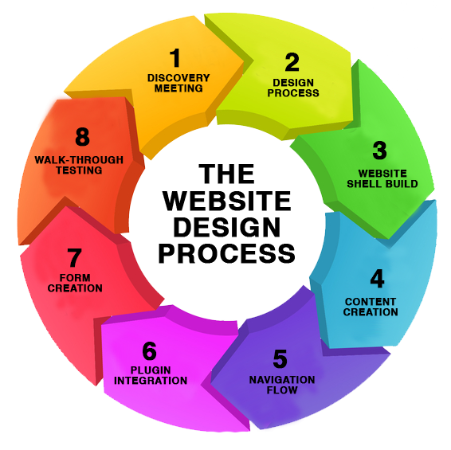

The 8 Phases of Web Design
The Web design process is not unlike other communication processes. If you are familiar with developing a creative brief, a public relations plan, a communication plan or a new product, the phases will look very familiar. The phases of the Web design process include the following steps.
Click on the relevant phase in the image to know more....
